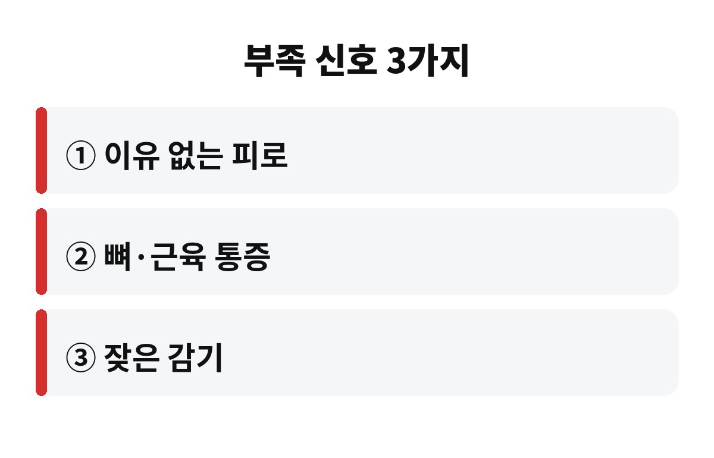
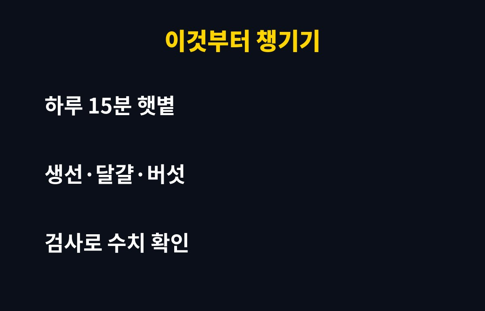

비타민D 부족 증상은 이유 없는 피로, 뼈와 근육 통증, 잦은 감기 3가지가 대표적이에요. 하루 15분 햇볕을 쬐기 어려운 부모님이나 실내에서만 일하는 직장인이라면 지금부터 꼭 읽어 보세요.
날씨가 쌀쌀해지면 밖에 나가는 시간이 줄어들죠. 그런데 이 변화가 뼈 건강에 어떤 영향을 줄지 궁금하지 않으세요?
잠을 충분히 자도 몸이 무겁고 힘이 없다면 비타민D 부족을 한 번쯤 의심해 볼 수 있어요. 물론 피로는 원인이 다양해서 이것만으로 단정할 수는 없어요. 하지만 실내 생활이 길고 햇볕을 거의 못 쬐는 분이라면 가능성이 올라가요.
비타민D는 음식으로 얻는 양이 많지 않고, 대부분 햇볕을 받은 피부에서 만들어져요. 그래서 겨울이 다가올수록 부족해지기 쉬운 영양소로 꼽혀요. 비타민D 부족 증상을 일찍 알아차리는 게 중요한 이유예요.
나이가 들면 피부에서 비타민D를 만드는 능력이 떨어져요. 거기에 외출까지 줄면 부족해지기 더 쉬워요. 비타민D는 칼슘이 뼈에 잘 붙도록 돕는 역할을 해서, 부족하면 뼈가 약해지고 낙상 위험도 걱정돼요.
무릎이나 허리가 자주 쑤신다고 하시면 그냥 나이 탓이라고 넘기지 말고, 한 번쯤 수치를 확인해 보시길 권해요. 병원에서 혈액검사로 간단히 확인할 수 있거든요.
| 의심 신호 | 이렇게 해 보세요 |
| 이유 없는 피로 | 낮 시간 짧은 산책 |
| 뼈·근육 통증 | 혈액검사로 수치 확인 |
| 잦은 감기 | 식단·생활 습관 점검 |

흔히 팔과 얼굴을 드러내고 하루 15분 정도 걸으면 도움이 된다고 알려져 있어요. 다만 계절, 지역, 피부색, 옷차림에 따라 차이가 커서 모두에게 똑같이 맞는 시간은 아니에요. 유리창 너머로 받는 햇볕은 효과가 거의 없다는 점도 기억해 두세요.
점심시간에 10분만 밖에 나가도 기분 전환까지 되니 일석이조예요. 자외선이 걱정되는 분은 오래 쬐기보다 짧고 꾸준하게 하는 쪽이 낫습니다.
고등어, 연어 같은 생선, 달걀노른자, 말린 버섯류에 비타민D가 들어 있어요. 식단만으로 채우기 어렵다면 영양제를 고려할 수도 있는데, 많이 먹는다고 좋은 게 아니에요. 지용성 비타민이라 과하게 먹으면 몸에 쌓여 문제가 될 수 있거든요.
그래서 영양제는 먼저 수치를 확인하고, 의사나 약사와 상의해서 용량을 정하는 게 안전해요. 부모님께 사다 드리기 전에 지금 드시는 약과 겹치지 않는지도 꼭 확인해 주세요.

오늘 부모님께 전화 한 통 드리면서 "요즘 밖에 좀 나가세요?" 하고 물어보는 건 어때요? 작은 안부가 뼈 건강의 첫걸음이 될 수 있어요. 도움이 되셨다면 구독해 두고 다음 건강 이야기도 받아 보세요.
※ 일반적인 건강 정보이며 진단·치료를 대신하지 않습니다. 증상이 계속되면 반드시 전문의 상담을 받으세요.